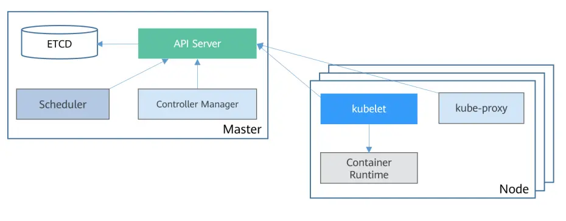

Kubernetes 基本组件

Kubernetes 集群组件分为两类，即两种节点角色。
- master
master 节点主要用来管理整个集群，通常为 3 或者 5 个。运行的典型组件有 kube-apiserver、kube-controller-manager、kube-scheduler、etcd，虽然也可以用于提供工作负载，但是生产环境并不推荐。
- node
node 节点主要用来承载业务流量，节点的数量从几个、到几十个、甚至几百个都可以。运行的典型组件有 kubelet，kube-proxy，这几个组件在 master 上也会部署。
在生产环境下，建议不要将集群拆分得太小。过小的查分粒度，会导致集群的运维成本高，资源利用率低，而且不利于充分发挥 Kubernetes 本身的弹性优势。
etcd
etcd 是集群的存储组件，通常采用 3 或者 5 个实例于 master 节点上。
etcd 基于 raft 协议采用二阶段提交，保证分布式场景下强一致性。并不是 Etcd 集群的实例数量越多越好，实例越多提交时需要的时间越多，通常很少超过 7 个实例。
etcd 部署的机器要求尽可能好的磁盘 IO，采用 SSD 能显著降低 etcd 的响应时间。
kube-apiserver
etcd 存储了整个集群的元数据信息，但整个集群的元数据交互，都需要经过 kube-apiserver。
这里元数据指的是对负载、秘钥等对象的定义，各种对象的状态等相关信息。
在多 master 的高可用集群中，kube-apiserver、kube-controller-manager、kube-scheduler 在每一个 master 节点上，都会以静态 Pod 的形式进行部署。
kube-apiserver 提供了整个集群获取、更新、添加、删除元数据的统一入口。
kube-controller-manager
kube-controller-manager 是一组控制器，包括副本控制器、节点控制器、命名空间控制器等。
在集群中声明式定义一个负载，kube-controller-manager 会生成一系列的对象，以便于各个组件协同工作。
kube-controller-manager 的作用实际上就是将对人友好的元数据翻译为对机器友好的元数据。
kube-scheduler
Kubernetes 是一个分布式的操作系统，具有很多个节点。
那么如何选择应用运行在哪个节点上呢？可以人为指定，也可以交给调度器 kube-scheduler。
kube-scheduler 的功能很简单，就是给负载选择一个合适的节点。人为指定会有什么问题？
kubelet
在负载选择完节点之后，kubelet 会获取到当前节点需要运行的负载。
kubelet 会与容器运行时进行交互，创建真正的负载资源。
kubelet 实现了对节点负载完整的生命周期管理，创建、挂载存储、设置环境变量、消耗、驱逐等。
同时，kubelet 还会上报 Node、Pod 的状态。
kube-proxy
当负载运行起来之后，需要对外提供访问入口。
此时，kube-proxy 就可以通过 iptables 或者 ipvs 配置流量转发规则，将外部的流量导入应用负载。